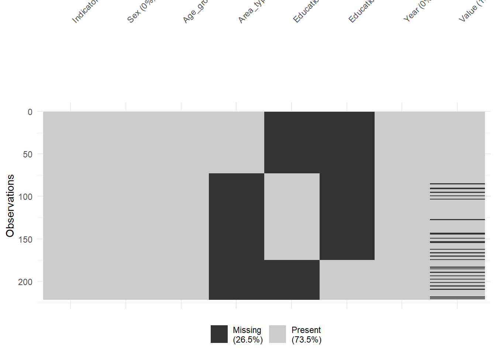
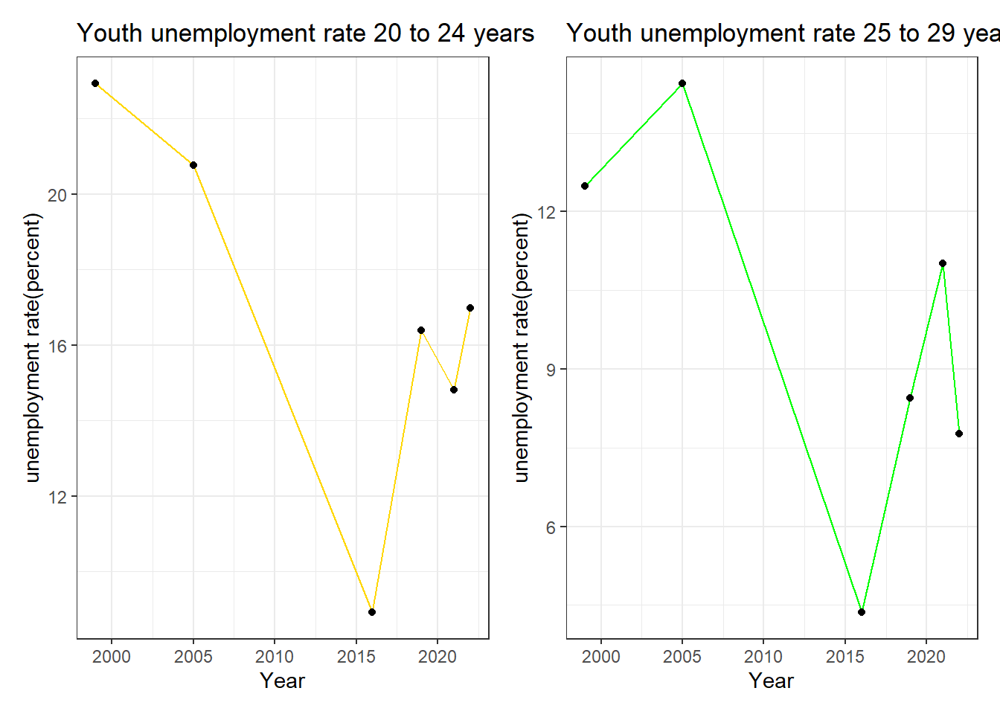
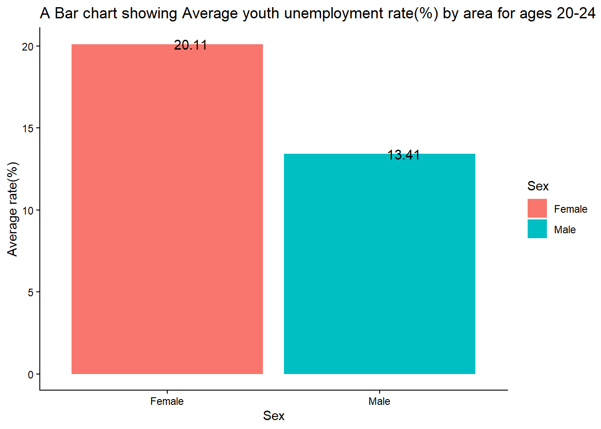
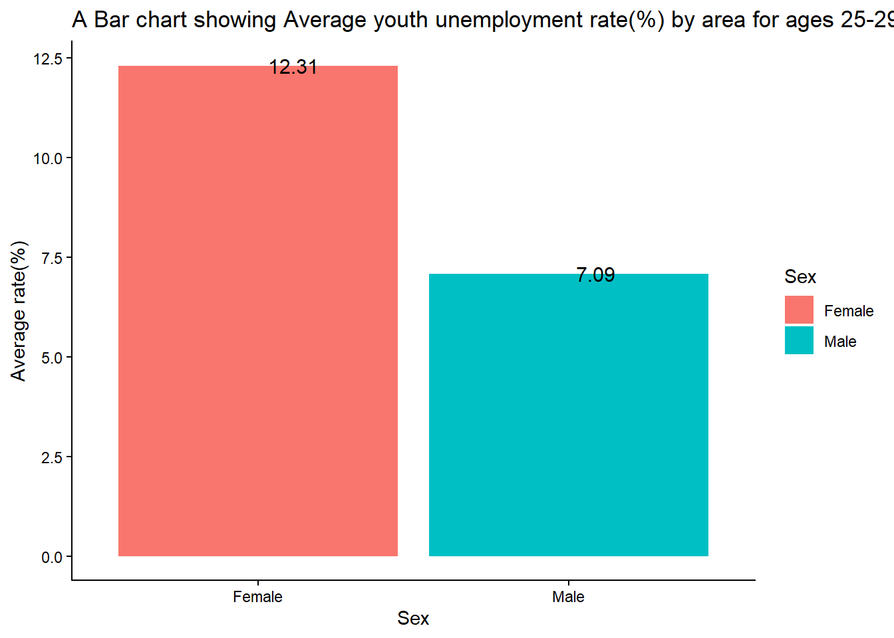
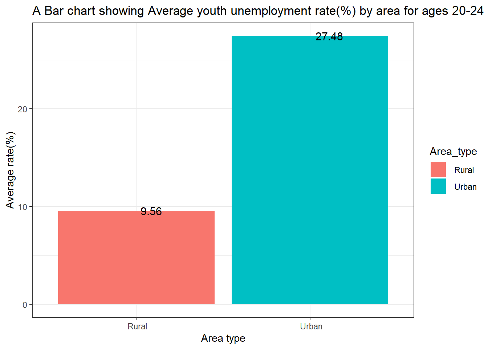
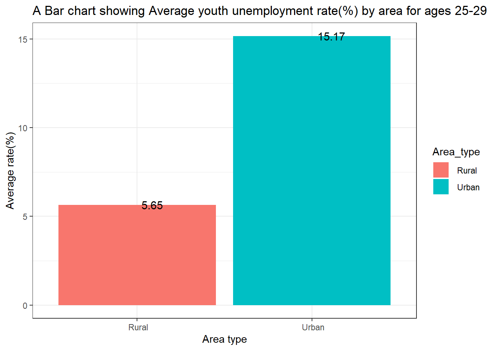
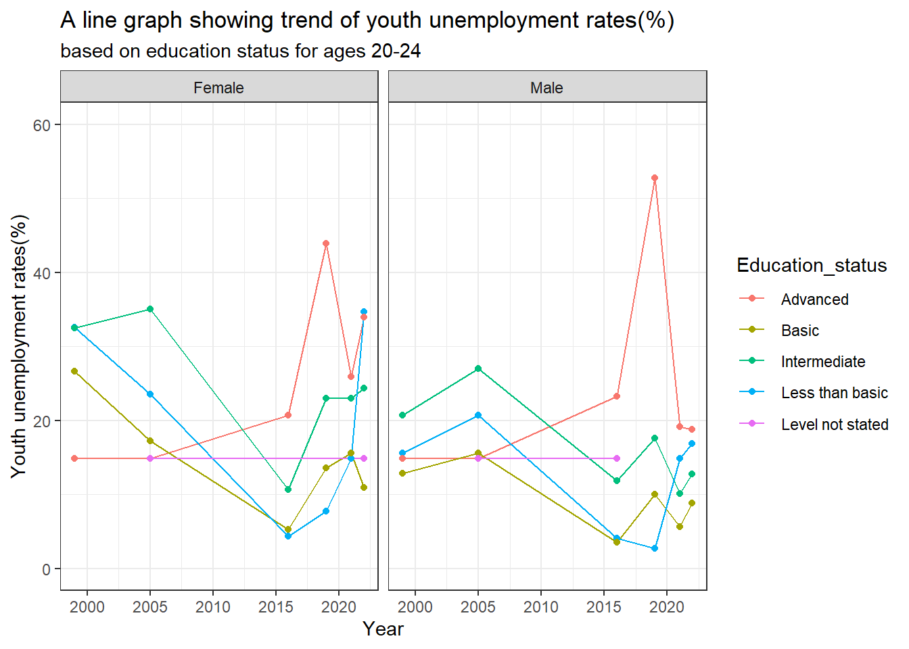
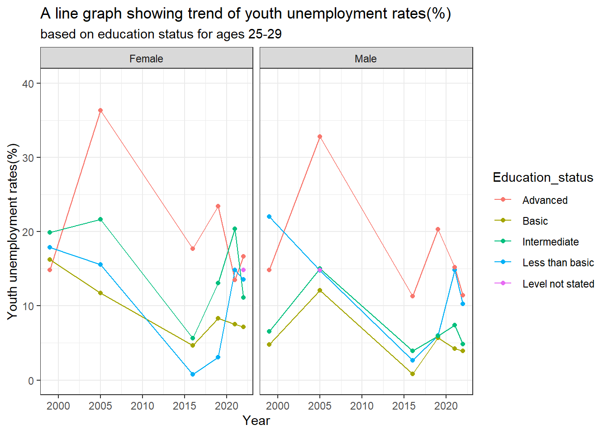
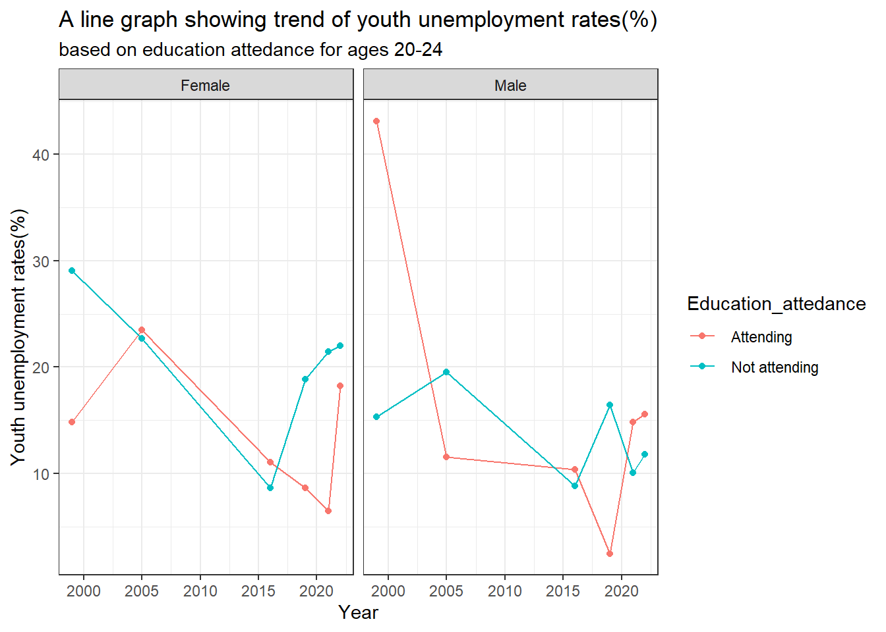
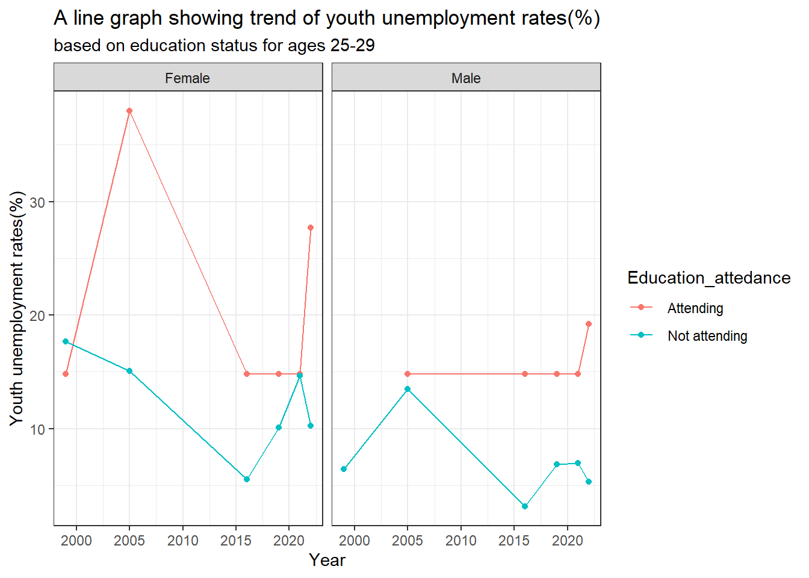

library(readxl)
library(tidyverse)
library(patchwork)
library(skimr)
library(naniar)
library(gt)YOUTH UNEMPLOYMENT RATES IN KENYA
INTRODUCTION
Kenya’s Youth unemployment is a major challenge, affecting economic growth and Social stability. this project aims at analyzing the factors,and implement strategies in education and work to create more jobs.
Problem Statement
High youth unemployment rates and cases of underemployment are major policy concerns, causing costs on individuals and national economy.
Limited job creation opportunities, mismatch of needed skills, No experience, poor access to career info are some of major key issues.
Objectives
To analyze trend of Youth unemployment rates nationally.
To Find youth unemployment rates in urban and rural areas.
To Find how education status impacts youth unemployment rates.
To Find how education attendance impacts youth unemployment rates.
Research Questions
What is the trend of Youth unemployment rates nationally?
How is Youth unemployment rates in urban and rural areas?
How does education status impacts youth unemployment rates?
How does education attendance impacts youth unemployment rates?
Scope
The project utilizes the data of two age groups, 20-24 and 25-29. These are the years where youth are off care from their parents, completed secondary education.
These age groups are actively participating in labour market unlike 15-19 which often distorts unemployment figures since they’re still in school and not actively seeking job.
Data Source
The data set is from ILOSTAT
Assumptions
The secondary data was collected and recorded accurately.
The study assumes that unemployment remains consistent across data sources and time periods in line with ILO standards.
The study assumes existing labour and youth employment policies remain relatively stable during the period of analysis.
DATA ANALYSIS
Required libraries
Import data set
Youth_annual<-read_excel("C:/Users/ASUS/Desktop/PRO/Data/youth.xlsx")
Youth_totals<-read.csv("C:/Users/ASUS/Desktop/PRO/Youth_total_rates.csv")Column names of our dataset
colnames(Youth_annual) [1] "ref_area.label" "source.label" "indicator.label"
[4] "sex.label" "classif1.label" "classif2.label"
[7] "time" "obs_value" "Area type"
[10] "Education status" "Education attedance"Rename the column names
colnames(Youth_annual)<-c("Country","Source","Indicator","Sex","Age_group","Classification","Year","Value","Area_type","Education_status","Education_attedance")Select required columns
Youth<-Youth_annual %>%
select(-c(Country,Source,Classification))Reorder column names
Youth<-Youth %>%
relocate(Year,Value, .after = last_col())Clean the age band
Youth<-Youth %>%
mutate(Age_group=recode(Age_group,"Age (Youth bands): 15-19"="15-19","Age (Youth bands): 15-29"="15-29","Age (Youth bands): 20-24"="20-24","Age (Youth bands): 25-29"="25-29"))Select required columns and filter age groups 20-24 and 25-29
Youth_f<-Youth %>%
filter(Age_group %in% c("20-24","25-29"))Age groups 20-24 and 25-29 are used for the analyses.
Clean area type, education status and education attendance columns
Youth_f$Area_type<-str_remove(Youth_f$Area_type,"Area type:")
Youth_f$Education_attedance<-str_remove(Youth_f$Education_attedance,"Educational attendance:")
Youth_f$Education_status<-str_remove(Youth_f$Education_status, ".*\\:")Missing Values
#Count the missing values
sum(is.na(Youth_f))[1] 468#Visualize the missing values
Youth_f %>%
vis_miss()
Our visualization shows Area type,Education level and status and value are the columns with missing values.
This totals to 468 missing values
Convert age group, and sex to factors, years to numeric
Youth_f$Sex<-as.factor(Youth_f$Sex)
Youth_f$Age_group<-as.factor(Youth_f$Age_group)
Youth_f$Area_type<-as.factor(Youth_f$Area_type)
Youth_f$Education_status<-as.factor(Youth_f$Education_status)
Youth_f$Education_attedance<-as.factor(Youth_f$Education_attedance)
Youth_f$Year<-as.numeric(Youth_f$Year)Structure of the data
Youth_f%>%
skim()| Name | Piped data |
| Number of rows | 221 |
| Number of columns | 8 |
| _______________________ | |
| Column type frequency: | |
| character | 1 |
| factor | 5 |
| numeric | 2 |
| ________________________ | |
| Group variables | None |
Variable type: character
| skim_variable | n_missing | complete_rate | min | max | empty | n_unique | whitespace |
|---|---|---|---|---|---|---|---|
| Indicator | 0 | 1 | 53 | 68 | 0 | 3 | 0 |
Variable type: factor
| skim_variable | n_missing | complete_rate | ordered | n_unique | top_counts |
|---|---|---|---|---|---|
| Sex | 0 | 1.00 | FALSE | 2 | Fem: 111, Mal: 110 |
| Age_group | 0 | 1.00 | FALSE | 2 | 20-: 112, 25-: 109 |
| Area_type | 149 | 0.33 | FALSE | 3 | Na: 24, Ru: 24, Ur: 24 |
| Education_status | 119 | 0.46 | FALSE | 5 | Ad: 24, Ba: 24, In: 24, Le: 24 |
| Education_attedance | 174 | 0.21 | FALSE | 2 | No: 24, At: 23 |
Variable type: numeric
| skim_variable | n_missing | complete_rate | mean | sd | p0 | p25 | p50 | p75 | p100 | hist |
|---|---|---|---|---|---|---|---|---|---|---|
| Year | 0 | 1.00 | 2013.70 | 8.60 | 1999.00 | 2005.00 | 2016.00 | 2021.00 | 2022.00 | ▂▃▁▃▇ |
| Value | 26 | 0.88 | 14.82 | 10.04 | 0.79 | 6.95 | 12.76 | 19.69 | 57.37 | ▇▆▂▁▁ |
Impute missing values in Value column by its average
Youth_f$Value[is.na(Youth_f$Value)]<-mean(Youth_f$Value,na.rm = TRUE)Summary of unemployment rate
summary(Youth_f$Value) Min. 1st Qu. Median Mean 3rd Qu. Max.
0.787 7.711 14.825 14.825 18.705 57.372 The highest unemployment rate is at 57.37% and lowest at 0.79%.
What is the trend of youth unemployment rates over time?
nation<-Youth_totals %>%
select(Sex,Age_group,Classification,Year,Value) %>%
filter(Classification == " National")
p1<-nation %>%
filter(Age_group=="20-24") %>%
ggplot(aes(Year,Value))+
geom_line(color="gold")+
geom_point()+
labs(title = "Youth unemployment rate 20 to 24 years",x="Year",y="unemployment rate(percent)")+
theme_bw()
p2<-nation %>%
filter(Age_group=="25-29") %>%
ggplot(aes(Year,Value))+
geom_line(color="green")+
geom_point()+
labs(title = "Youth unemployment rate 25 to 29 years",x="Year",y="unemployment rate(percent)")+
theme_bw()
p1+p2
Youth at Ages 20-24 appears to face high unemployment rates over 15 percent in 2020 compared to ages 25-29 (10 percent).
Age group 20-24 Youth Unemployment rate shows a sharp decrease from early 2000’s to 2015, which then rises sharply to around 2020 drops and then rises again.
Age group 25-29 Youth Unemployment rates rises from early 2000’s and sharply falls from 2005 to 2016, which then rises to 2020 and then falls.
####Unemployment rates by Gender.
Age_20_24<-Youth_f %>%
select(-c(Education_status,Education_attedance)) %>%
filter(Area_type ==" National",Age_group=="20-24")
Age_25_29<-Youth_f %>%
select(-c(Education_status,Education_attedance)) %>%
filter(Area_type ==" National",Age_group=="25-29")
b1<-Age_20_24 %>%
group_by(Sex) %>%
summarise(mean_sex=round(mean(Value,na.rm=TRUE),2))
b2<-Age_25_29 %>%
group_by(Sex) %>%
summarise(mean_sex=round(mean(Value,na.rm=TRUE),2))
b1 %>%
gt()| Sex | mean_sex |
|---|---|
| Female | 20.11 |
| Male | 13.41 |
b2 %>%
gt()| Sex | mean_sex |
|---|---|
| Female | 12.31 |
| Male | 7.09 |
b1 %>%
ggplot(aes(Sex,mean_sex,fill = Sex))+
geom_bar(stat = "identity")+
geom_text(aes(label = mean_sex),hjust=-.2,size = 4)+
theme_classic()+
labs(x="Sex",y="Average rate(%)",title = "A Bar chart showing Average youth unemployment rate(%) by area for ages 20-24")
b2 %>%
ggplot(aes(Sex,mean_sex,fill = Sex))+
geom_bar(stat = "identity")+
geom_text(aes(label = mean_sex),hjust=-.2,size = 4)+
theme_classic()+
labs(x="Sex",y="Average rate(%)",title = "A Bar chart showing Average youth unemployment rate(%) by area for ages 25-29")
For Age group 20 to 24 Youth Females have high unemployment rate of 20.11 percent compared to youth males with 13.41 percent.
For Age group 25 to 29 Youth Females have high unemployment rate of 12.31 percent compared to youth males with 7.09 percent.
How is Youth unemployment rates in urban and rural areas?
area<-Youth_f %>%
select(-c(Education_status,Education_attedance)) %>%
filter(Area_type!=" National")
Ag1<-area %>%
filter(Age_group=="20-24") %>%
group_by(Area_type) %>%
summarise(mean_area=round(mean(Value,na.rm=TRUE),2))
Ag2<-area %>%
filter(Age_group=="25-29") %>%
group_by(Area_type) %>%
summarise(mean_area=round(mean(Value,na.rm=TRUE),2))
Ag1 %>%
ggplot(aes(Area_type,mean_area,fill = Area_type))+
geom_bar(stat = "identity")+
geom_text(aes(label = mean_area),hjust=-.2,size = 4)+
theme_bw()+
labs(x="Area type",y="Average rate(%)",title = "A Bar chart showing Average youth unemployment rate(%) by area for ages 20-24")
Ag2 %>%
ggplot(aes(Area_type,mean_area,fill = Area_type))+
geom_bar(stat = "identity")+
geom_text(aes(label = mean_area),hjust=-.2,size = 4)+
theme_bw()+
labs(x="Area type",y="Average rate(%)",title = "A Bar chart showing Average youth unemployment rate(%) by area for ages 25-29")
Urban areas in both age groups of 20-24 and 25-29 have higher average youth unemployment rates of 27.48 and 15.17 compared to rural areas with 9.56 and 5.65.
How is Youth unemployment based on education status?
edu<-Youth_f %>%
select(-c(Area_type,Education_attedance)) %>%
drop_na()
edu1<-edu %>%
filter(Age_group=="20-24") %>%
ggplot(aes(Year,Value,colour = Education_status))+
geom_line()+
geom_point()+
facet_wrap(~Sex)+
theme_bw()+
ylim(0,60)+
labs(y="Youth unemployment rates(%)",title = "A line graph showing trend of youth unemployment rates(%)",subtitle = "based on education status for ages 20-24")
edu2<-edu %>%
filter(Age_group=="25-29")%>%
ggplot(aes(Year,Value,colour = Education_status))+
geom_line()+
geom_point()+
facet_wrap(~Sex)+
theme_bw()+
ylim(0,40)+
labs(y="Youth unemployment rates(%)",title = "A line graph showing trend of youth unemployment rates(%)", subtitle = "based on education status for ages 25-29")
edu1
edu2
Age 20 to 24
Youth with advanced education show higher unemployment rates reaching over 40% towards year 2020 with sharp spikes. For those with intermediate, has higher rates compared to those with basic and less than basic.
Youth with basic education shows relatively lower rates but with some spikes Females in the age group record higher rates compared to males.
Age 25 to 29
Youth with advanced education records the highest rates even reaching over 30% in 2005 but keeps falling lately. Youth with less basic education shows a higher rate compared to those with basic and intermediate levels of education.
Youth with basic education shows lower rates reaching below 5% severally around 2020. Females in the age group record higher rates compared to males.
Generally, youth unemployment is not only a problem for low educated, but also highly educated indicating rising graduate unemployment.
Female youth consistently exhibit higher unemployment rates than males, highlighting persistent gender disparities in labour market outcomes.
How is Youth unemployment based on education attedance?
edus<-Youth_f %>%
select(-c(Area_type,Education_status)) %>%
drop_na()
edus1<-edus %>%
filter(Age_group=="20-24") %>%
ggplot(aes(Year,Value,colour = Education_attedance))+
geom_point()+
geom_line()+
facet_wrap(~Sex)+
theme_bw()+
labs(y="Youth unemployment rates(%)",title = "A line graph showing trend of youth unemployment rates(%)", subtitle = "based on education attedance for ages 20-24")
edus2<-edus %>%
filter(Age_group=="25-29")%>%
ggplot(aes(Year,Value,colour = Education_attedance))+
geom_line()+
geom_point()+
facet_wrap(~Sex)+
theme_bw()+
labs(y="Youth unemployment rates(%)",title = "A line graph showing trend of youth unemployment rates(%)", subtitle= "based on education status for ages 25-29")
edus1
edus2
Age group 20 to 24
Youth unemployment rates show a falling trend from early 2000’s and slowly rising in the last decade. Youth not attending education institutions shows an average higher rate over 10% since early 2000’s. For those attending, falls to below 10% in the year 2020.
Age group 25 to 29
Youth attending to education in this age group, show higher rates over 15% compared to not attending which keeps falling since 2020 to around 5%.
Education is critical determinant of employment countrywide, yet higher education does not guarantee employment.
Relevance to Sustainable Development Goals and Vision 2030
Reducing unemployment among the youth in age group 20-29 years, increases labour productivity, national output and consumer demand which is essential to economic growth.
Unemployment among youths who are educated is a waste of human capital, and this contradicts the social pillar’s aim of maximizing returns on education investment.
Providing youth with meaningful employment is essential for civic participation and long term political stability.
CONCLUSION AND RECOMMENDATIONS
Youth unemployment in Kenya remains a major socio-economic problem with both structural and cyclical causes.
Current Situation
Data shows youth unemployment rates was about 12% in 2024, falling compared to previous years but significant compared to other age groups. Other sources indicate youths have the highest percentage of the unemployed in Kenya.
Many youth appear to be either underemployed or Not in Education, Employment, Or Training category.(NEET)
Key Drivers of Youth Unemployment
Many youths enter the job market annually, after graduating from universities, colleges, training institutes, secondary and primary schools. Many of these youths lack specific skills required by employers.
The higher number of youth graduates exceeds the economies ability to create adequate jobs.
High unemployment rate among youths in age group 20 to 29 contributes to under-utilisation of skills, lower income and even crime frustration among youth
Recommendation
Revise the curriculum and expand job training programs to align education with current market needs.
Expand access to provide grants and business support for youth entrepreneurs to boost their start-ups.
Facilitate industrial growth so as to create scalable employment opportunities.
The government should start schemes to strengthen and scale succesfull initiatives to bolster and offer growth to youths.
Address gender disparities by creating programs targeting young women and people with disabilities.
ABBREVIATIONS
NEET - Not in Education,Employment or Training.
ILO- International Labour Orgnization